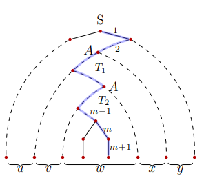
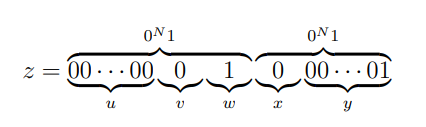
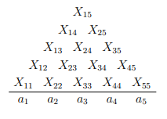
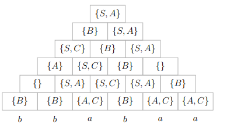

上下文无关语言的泵引理
定理33：如果语言$L$是CFL，那么存在正整数$N$，对$\forall z \in L$，只要$\vert z \vert \geq N$，就可以将$z$分为五部分$z=uvwxy$满足
- $vx \not= \epsilon$（或$\vert vx \vert \gt 0$）
- $\vert vwx \vert \leq N$
- $\forall i \geq 0,wv^iwx^iy \in L$
证明：
- 设CNF格式CFG $G$中变元数$\vert V \vert = m$，令$N = 2^m$，若有$z \in L(G)$，且$\vert z \vert \geq N$
- 则$z$的派生树内节点是二叉树，最长路径长度至少$m+1$，节点至少$m+2$
- 该路径下由上之上$m+1$个节点中，必有两个$T_2$和$T_1$标记了相同的变元$A$
- 若标记$T_2$产物为$w$，且是$T_1$的子树，$T_1$的产物可记为$vwx$，则有$A \underset{}{\stackrel{\ast}{\Rightarrow}} vAx$和$A \underset{}{\stackrel{\ast}{\Rightarrow}} w$
- 那么$\forall i \geq 0, A \underset{}{\stackrel{\ast}{\Rightarrow}} v^iwx^i$。不妨设$z=wvwxy$，则$S \underset{}{\stackrel{\ast}{\Rightarrow}} uAy \underset{}{\stackrel{\ast}{\Rightarrow}} uv^iwx^iy$
- $T_1$路径长不超过$m+1$，那么$T_1$产物长度不超过$2^m$，所以$\vert vwx \vert \leq 2^m$
- $T_2$必在$T_1$的左/右儿子中，所以$v$和$x$不可能同时为空，即$vx \not= \epsilon$

泵引理应用
例1：证明$L=\lbrace 0^n1^n2^n \vert n \geq 1 \rbrace$不是上下文无关语言
证明：
- 假设$L$是CFL，那么存在整数$N$，对$\forall z \in L(\vert z \vert \geq N)$满足泵引理
- 从$L$中取$z=0^N1^N2^N$，则显然$z \in L$且$\vert z \vert = 3N \geq N$
- 由泵引理，$z$可被分为$z=uvwxy$，且有$\vert vwx \vert \leq N$和$vx \not= \epsilon$
- 那么$vwx$可能
- 只包含0，1或2，那么$uwy \not\in L$
- 只包含0和1，或只包含1和2，那么也有$uwy \not\in L$
- 与泵定理$uwy=uv^0wx^0y \in L$矛盾，假设不成立
- $L$不是上下文无关的
例2：证明$L = \lbrace ww \vert w \in \lbrace 0,1 \rbrace^{\ast} \rbrace$不是上下文无关的。
【错误的证明】：假设$L$是CFL，取$z=0^N10^N1$，那么$z=uvwxy$为

则对任意$i \geq 0$，有$uv^iwx^iy \in L$，满足泵定理
【正确的证明】假设$L$是CFL。取$z=0^N1^N0^N1^N$，将$z$分为$z=uvwxy$时
- 若$vwx$在$z$中点的一侧，$uv^0wx^0y$显然不可能属于$L$
- 若$vwx$包括$z$中点，那么$uv^0wx^0y$为$0^N1^j0^j1^N$，也不可能属于$L$
所以，假设不成立，$L$不是CFL。
上下文无关语言的封闭性
代换的封闭性
定义：两个字母表$\Sigma$到$\Gamma$的函数$s:\Sigma \to 2^{\Gamma^{\ast}}$称为代换，$\Sigma$中一个字符$a$在$s$的作用下为$\Gamma$上的一个语言$L_a$，即
扩展$s$的定义到字符串
再扩展$h$到语言，对$\forall L \subseteq \Sigma^{\ast}$
定理34：如果$\Sigma$上的CFL $L$和代换$s$，且每个$a \in \Sigma$的$s(a)$都是CFL，那么$s(L)$也是CFL
构造方法
设CFL $L$的文法$G=(V,T,P,S)$，每个$s(\alpha)$的文法$G\alpha=(V\alpha,T\alpha,P\alpha,S_\alpha)$，那么$s(L)$的文法可以构造为
- $V^{\prime} = V \cup (\bigcup_{a \in T}V_a)$
- $T^{\prime} = \bigcup_{a \in T} T_a$
- $P_{\prime}$包括每个$P_a$和$P$中产生式，但是要将$P$的产生式中每个终结符$a$均替换为文法$G_a$的开始符号$S_a$
证明：对$\forall w \in s(L)$，那么一定存在某个$x = a_1 a_2 \dots a_n \in L$，使
那么$w$可以分为$w = w_1 w_2 \dots w_n$，且$w_i \in s(a_i)$，即
由于$S \underset{\ast}{\stackrel{G}{\Rightarrow}} x = a_1 a_2 \dots a_n$，所以
所以$w \in \boldsymbol{L}(G^{\prime})$，即$s(L) \subseteq \boldsymbol{L}(G^{\prime})$
因为$G^{\prime}$的终结符仅能由每个$S_a$派生，因此对$\forall w \in \boldsymbol{L}(G^{\prime})$有
因为$G^{\prime}$中每个$S_a$在$G$中是终结符$a$，所以
又因为$\alpha = S{a_1}S{a2} \dots S{an} \underset{G}{\stackrel{\ast}{\Rightarrow}} w = w_1 \dots w_n$，所以$S{a_i} \underset{G}{\stackrel{\ast}{\Rightarrow}} w_i$，即$w_i \in s(a_i)$，那么
所以$w \in s(L)$，即$\boldsymbol{L}(G^{\prime}) \subseteq s(L)$，因此$\boldsymbol{L}(G^{\prime}) = s(L)$
例3：设$L = \lbrace w \in \lbrace a,b \rbrace^{\ast} \vert w有相等个数的a和b \rbrace$，代换
求$s(L)$的文法
解：设计$L$的文法为：
$L_a$的文法为：
$L_b$的文法为：
那么$s(L)$的文法为：
并/连接/闭包/同态/逆同态/反转的封闭性
定理：上下文无关语言在并，连接，闭包，正闭包，同态下封闭
证明1：设$\Sigma=\lbrace 0,1 \rbrace$，$L_1,L_2$是任意CFL，定义代换
语言$\lbrace 1,2 \rbrace, \lbrace 12 \rbrace, \lbrace 1 \rbrace^{\ast}$和$\lbrace 1 \rbrace^{+}$显然都是CFL，那么
- 由$s(\lbrace 1,2 \rbrace)=s(1) \cup s(2) = L_1 \cup L_2$，所以运算封闭
- 由$s(\lbrace 12 \rbrace) = s(12) = s(\epsilon)s(1)s(2)=L_1 L_2$，所以连接运算封闭
- 闭包和正闭包运算封闭，因为若$h$是$\Gamma$上的同态，$L$是$\Sigma$上的CFL，对$\forall a \in \Sigma$令代换$s^{\prime} = \lbrace h(a) \rbrace$，则所以同态封闭
证明2：用文法证明并/连接/闭包的封闭性。设CFL $L_1,L_2$文法分别为
那么，分别构造
- $L_1 \cup L_2$的文法为
- $L_1L_2$的文法为
- $L_1^{\ast}$的文法为再证明所构造的文法的正确性，略
定理36：如果$L$是CFL，那么$L^R$也是CFL
证明：设$L$的文法$G=(V,T,P,S)$，构造文法
则$L(G^{\prime})=L^R$，证明略
定理37：如果$L$是字母表$\Delta$上的CFL，$h$是字母表$\Sigma$到$\Delta^{\ast}$的同态，那么$h^{-1}(L)$也是CFL
证明：设PDA $P=(Q,\Delta,\Gamma,\delta,q_0,Z_0,F), \boldsymbol{L}(P)=L$
构造$\boldsymbol{L}(P^{\prime})=h^{\prime}(L)$的PDA
在$P^{\prime}$的状态中，使用缓冲，暂存字符$a \in \Sigma$的同态字符$a \in \Sigma$的同态串$h(a)$的后缀
- $Q^{\prime} \subset Q \times \Delta^{\ast}$：状态$[q,\bar{x}]$中的$\bar{x}$为缓冲
- 设$q \in Q$，那么$\delta^{\prime}$定义如下
- $\forall [q,\bar{\epsilon}] \in Q \times \lbrace \bar{\epsilon}, \forall a \in \Sigma, \forall X \in T$
- 若$\delta(q,\bar{a},X)=\lbrace (p_1,\beta_1),(p_2,\beta_2) \dots (p_k,\beta_k) \rbrace$，则这里$\bar{a} \in \Delta \cup \lbrace \bar{\epsilon} \rbrace$，$\bar{x}$是某个$h(a)$的后缀
交和补运算不封闭
CFL对交运算不封闭
因为语言
都是CFL，而
不是CFL
CFL对补运算不封闭
因为$L_1 \cap L_2 = \overline{\overline{L_1} \cup \overline{L_2}}$
定理38：若$L$是CFL且$R$是正则语言，则$L \cap R$是CFL
证明：
设DFA $D=(Q_1,\Sigma,\delta_1,p_1,F_1)$且$\boldsymbol{L}(D) = R$，PDA $P=(Q_2,\Sigma,\Gamma,\delta_2,q_2,Z_0,F_2)$，且$\boldsymbol{L}(P)=L$。构造PDA
其中$\delta$为：
再往证$\boldsymbol{L}(P^{\prime})=L \cap R$，略。
封闭性的运用
例4：请证明语言$L$不是CFL
其中$n_a(w)$表示$w$中$a$的个数
证明：
- 因为$\boldsymbol{a}^{\ast}\boldsymbol{b}^{\ast}\boldsymbol{c}^{\ast}$是正则语言
- 而$L \cap \boldsymbol{a}^{\ast}\boldsymbol{b}^{\ast}\boldsymbol{c}^{\ast} = \lbrace a^n b^n c^n \vert n \geq 0 \rbrace$不是CFL
- 由CFL与正则语言的交还是CFL，所以$L$不可能是CFL
上下文无关语言的判定性质
可判定的CFL问题
- 空性：只需判断文法的开始符号$S$是否为非产生的
- 有穷性和无穷性
- 用不带无用符号的CNF的产生式画有向图
- 变元为顶点，若有$A \to BC$，则$A$到$B$和$C$各画一条有向边
- 检察图中是否有循环
- 成员性：利用CNF范式，有CYK算法检查串$w$是否属于$L$
**$CYK^1$算法
- CNF $G=(V,T,P,S)$，以$O(n^3)$时间检查”$w=a_1 a_2 \dots a_n \in \boldsymbol{L}(G)$?”
- 以动态规划的方式，在表中由下至上逐行计算$X{ij}$，再检查”$S \in X{1n}$?”
- 计算首行
- 计算其他 
例5：CNF $G$如下，用CYK算法判断$bababaa \in \boldsymbol{L}(G)$

因为$S \in X_16 = \lbrace S,A \rbrace$，所以$bbabaa \in \boldsymbol{L}(G)$
不可判定的CFL问题
- 判断CFG $G$是否歧义的?
- 判断CFL是否固有歧义的?
- 两个CFL的交是否为空？
- 两个CFL是否相同？
- 判断CFL的补是否为空？尽管有算法判断CFL是否为空
- 判断CFL是否等于$\Sigma$
乔姆斯基文法体系
如果文法$G=(V,T,P,S)$，符号串$\alpha \in (V \cup T)^{\ast} V (V \cup T)^{\ast}$，$\beta \in (V \cup T)^{\ast}$，产生式都形如
即每个产生式的左部$\alpha$中部至少要有一个变元，那么：
- 称$G$为0型文法或短语结构文法
- 若$\vert \beta \vert \geq \vert \alpha \vert$，称$G$称为1型文法或上下文有关文法
- 若$\alpha \in V$，称$G$为2型文法或上下文无关文法
- 若$\alpha \to \beta$都形如$A \to aB$或$A \to a$，称$G$为3型文法或正则文法